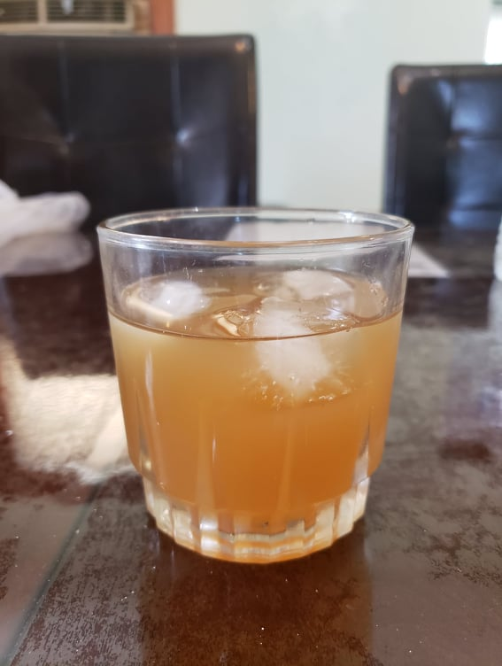

Tepache

Ingredients:
- Skin and core of 1 Pineapple
- 4 1/2 cup Water
- 1/2 cup Piloncillo (120 grams)
- 1 stick Cinnamon
- Optional: 3 Cloves
Instructions:
- Combine the water and piloncillo. Stir until completely dissolved.
- Place the pineapple skin, core, cinnamon, and optional cloves into the sugar water. Ensure that everything is completely submerged to prevent mold.
- Cover with a towel and let rest at room temperature for 48-36 hours. It should be very bubbly when it is ready.
- Filter out all the solids and pour into a container. Serve over ice.